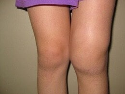
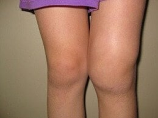

"Az ízületek kezelésének módszerei Magyarországon nem a legkényelmesebbek.", A híres japán reumatológus őszinte interjút adott a magyar kiadónak.
Dr. Shigeaki Hinohara a világhírű Tokiói Reumatológiai és Neurológiai Központ vezetője
Az ízületi betegségeknek csak egy oka van, és a magyar orvosok ezt teljesen figyelmen kívül hagyják.
Dr. Shigeaki Hinohara: "Magyarországon az ízületeket még mindig elavult és hatástalan gyógyszerekkel kezelik, amelyeket egy életen át szedni kénytelen az ember, míg eközben Japánban ugyanolyan egyszerűen kezelik őket, mint egy náthát"

A múlt évben Dr. Shigeaki Hinohara Magyarországra jött, hogy tapasztalatot cseréljen magyar kollégáival. Elborzasztotta az, amit Magyarországon látott, a szava is elakadt. A doktor szerint Magyarországon a reumatológia a múlt század közepén elakadt.
A Németországban tartott hangos interjúk után Dr. Shigeaki Hinohara készen áll, hogy interjút adjon a magyar hírügynökségnek is. Milyen ellenvetése van a híres orvosnak a magyar orvoslást illetően? Miért állítja, hogy Magyarországon az ízületi betegségtől szenvedő betegeknek nincs esélyük meggyógyulni ebben az országban?
Nemrég a japán sajtónak adott interjúiban azt mondta, hogy a Magyarországon látottak sokkolták. Kifejtené részletesebben, mit értett ezen megjegyzése alatt?
Rögtön el szeretném mondani, hogy nincsen semmilyen előítéletem az országgal, a kultúrájával vagy a magyar emberekkel kapcsolatban. De az orvoslás állapota valóban nagyon aggasztó a japán orvosok számára. A gyógyszerek legalább 20 évvel, sőt talán 30 évvel is el vannak maradva. Legalábbis ami az ízületeket és a mozgásszervi betegségeket illeti. Úgy is mondhatnánk, hogy Magyarországon a reumatológia a múlt század közepén ragadt.
Elég csak megnézni, mit ajánlanak a magyar orvosokk az ízületi betegségekre: Viprosal, Dolgit, Voltaren\Fastum gélek, Diclofenac, Nurofen és más hasonló gyógyszerek.
Amit az orvosok javasolnak az ízületek kezelésére, az csak enyhíti a betegség tüneteit, a fájdalmat, a gyulladást és az ödémát, de NEM GYÓGYíTJÁK AZT. Képzelje el, mi történik a szervezet szintjén. Amikor az ember ezeket a tablettákat szedi, vagy ezekkel a krémekkel keni a problémás területeket, a fájdalom elmúlik. De amint leáll velük az ember, a fájdalom azonnal visszatér.
A fájdalom pedig fontos jelzés, mert azt mutatja, hogy az ízületben egy patologikus folyamat zajlik. Csak elnyomják a fájdalmat, és a sérült terület csak még nagyobb rombolásnak van így kitéve. A pusztulás folyamata 3 szorosára is felgyorsul, és végül visszafordíthatatlan változásokhoz és fogyatékossághoz vezet.
Az ízületi fájdalmakra Japánban már vagy 20 éve nem alkalmaznak ilyen módszereket. A fájdalomcsillapítókat csak szélsőséges esetekben használják, nagyon óvatosan és ritkán. Az ilyen gyógyszerek ráadásul vénykötelesek, és más mennyiségekben árulják.
Az úgynevezett "kondroprotektorokat" teljesen betiltották, mint csalást támogató és haszontalan készítményeket.
Az orvosaik és a gyógyszereik csak rontanak az emberek ízületén! Persze érthető, hogy sokkal jövedelmezőbb állandóan eladni tünetkezelésre alkalmas készítményeket. De a beteg számára jobb, ha egyszer és mindenkorra meggyógyítjuk a betegséget, helyreállítjuk a pusztuló ízületeket!
 
Mi a helyzet a japán kezeléssel, ott hogyan kezelik az ízületeket?
Nálunk minden orvos, a reumatológus-professzoroktól kezdve a hétköznapi terapeutákig és a mentősökig, már mindenki nagyon jól érti, hogy nem a betegség következményeit kell kezelni, hanem annak az okait kell megszüntetni. Ez a kulcs a teljes, gyors és biztonságos gyógyuláshoz. Mi az ízületi traumák fő oka? Általában a sók lerakódása a keringési rendellenességek és a szinoviális folyadék nem megfelelő keringése miatt válik lehetővé.
Az uraták az úgynevezett húgysavsók, amelyek az előrehaladott köszvény okai.
A csontkinövések pedig tulajdonképpen mészsók, amelyek a maradék 97%-ban kialakuló ízületi és gerincbetegség okai lehetnek. Vagyis az ízületi gyulladás, az artrózis (ízületi kopás), az osteochondrosis, a csontritkulás, a reuma, a bursitis és a ganglion minden típusának. Mindezen betegségeknek egyetlen oka van: az osteophyte-k lerakódásos kialakulása.
Az ízületek felületein lerakódott sók, pont, mint a smirglipapír, csiszolják a környező szövetek, a csontokat és a porcokat. Szétterjedve a kristályok sói károsítani kezdik az izomszöveteket, az inakat, az ereket és a kapillárisokat. Ezzel gyulladást, fertőzést, duzzanatot és súlyos fájdalmat okozva.
Elhanyagolt esetekben a sók nagy mennyiségben való felhalmozódása könnyen a csont egy részének a letöréséhez is vezethetnek egy élesebb mozdulat következtében, így teljesen munkaképtelenné téve tulajdonosukat és tartósan mozgásképtelenné téve azok ízületeit.
Ez egy nagyon veszélyes tévhit, hogy a kalcium jó az ízületeknek. Igen, a kalcium hasznos, de csak az EGÉSZSÉGES ízületek számára hasznos. Amikor az ízületek már fájnak vagy ropognak, az azt jelenti, hogy már kialakult egy osteophyte-es (csontkinövés) réteg, és a kalcium, a csontszövet erősítése mellett erősíti a sóképződményeket is, így súlyosbítva és felgyorsítva azok növekedését.
Ezért a japán reumatológusok elsősorban helyreállítják a vérkeringést a fájó ízületekben, így az évek során felhalmozódott sók eltávolításra kerülnek. Ez viszont helyreállítja a szinoviális folyadék normális keringését, és elindítja az ízület szöveteinek helyreállítását.
Az emberi ízületek valójában nagyon jól regenerálódnak, mi több, maguktól képesek regenerálódni, majdnem mint ahogy a gyík is visszanöveszti a farkát. Csak egy kis segítségre van szükségünk ebben, még pedig, hogy felszabadítsuk ezeket a "leragadt" sókat, ami egy önálló folyamat a szervezetben.
Már a 90-as években a japán tudósoknak sikerült a kvázi-B-vitamin egy speciális formuláját létrehozni, az úgynevezett alfa-artofrerolt. Természetes összetevők szintézise által jön létre: E-, B3-vitamin, Panthenol, allantoin, Menta, fahéj, eukaliptusz illóolajok, Ördögkarom kivonat, Árnika, Glükózamin és kondroitin valamint még több mint 50 más különböző kivonatot tartalmaz. E-, B3-vitamin gyógyítja a repedéseket, hidratálja és táplálja az epidermist, elpusztítja a fertőzést és megakadályozza annak újbóli elterjedést. Nem létezik ennél hatékonyabb dolog a természetben a csontok és az ízületek keringésének aktiválására.
Ez az anyag képes behatolni a lerakódott só molekuláiba, és belülről robbantja szét őket, ennek eredményeképpen az ízületek felületeit megtisztítja, a véráramlás pedig helyreáll, illetve a szinoviális folyadék keringése is normalizálódik. ÖRÖKRE! Vagy inkább, amíg a sók fel nem halmozódnak újra (de ez több évtizedet vesz igénybe). Nincs többé szükség FOLYAMATOS gyógyszerszedésre, hogy megszabaduljon a fájdalomtól és a gyulladástól. Nem kell többé attól félnie, hogy egy nap a csontkinövése örökre "lebénítja" és megfosztja a mozgás képességétől, és nem lesz szüksége protézisekre sem. Az emberek évtizedekig teljesen egészségesen élhetnek.
Amikor megláttam a magyar orvosi statisztikákat, sokkot kaptam! Tudja, mi a mozgásszervi fogyatékosság leggyakoribb oka Magyarországon? Nem a rák, nem is az aids, de még csak nem is a cukorbetegség, hanem a osteoarthritis! Egy egyszerű osteoarthritis, amelyet Japánban kb. 2-3 hét alatt kezelnek, még hozzá nem is a legdrágább gyógyszerekkel, Magyarországon pedig lebénulnak az emberek ezzel a problémájukkal!
Japánban ma az ízületi betegségek nem tekinthetők veszélyes patológiáknak, kivéve persze, ha súlyos traumás sérülésekről beszélünk: törések, zúzódások, szakadások stb. Az ízületekben megjelenő fájdalom és gyulladás csak arra utal, hogy az ízületek sókkal "szennyezettek", és itt az ideje, hogy megtisztítsák az ízületeiket. A 2-3 hetes "tisztítás" után az ízületek működése normalizálódik, ismét a korábbi módon fognak működni, az ízületi problémákat a következő évtizedre el lehet felejteni.
Azok az ízületi betegségek, amelyeket Önöknél külön-külön "gyógyítanak", Japánban már régóta egy nagy betegségként kezelik: "Artoninio de sales" (ízületi sóképződmények). Ide tartoznak a következők:
- Kinövések
- Artritisz (ízületi gyulladás)
- Osteoarthritis
- Osteocondrosis
- Reuma
- Csontritkulás
- Bursitis (nyáktömlőgyulladás)
- Synovitis (az ízületi membrán gyulladása)
- Ganglion
Ez egy nagyon rövid lista, de a fennmaradó betegségek csak alfajai a fő kilenc patológiának. Például az artrózis és az osteochondrosis alfaja stb.
A megbetegedések ezen hosszú listája nagyon egyszerűen gyógyítható, mindössze az ízületek teljes tisztítását igényli. Teljesen biztonságos, amely nem igényel orvosi segítséget, és otthon is alkalmazható.
Hogyan "tisztítják" meg az ember ízületeit Japánban?
Ma vannak már erre speciális készítmények, amelyeket arra terveztek, hogy megtisztítsák az ízületeket a sólerakódásoktól. E-, B3-vitamint tartalmaznak. Például: egy nagyon jó termék a . E-, B3-vitamin-t tartalmaz egy speciális, könnyen felszívódó formában, ami növeli a termék hatékonyságát is.
A fontos előnye még, hogy szisztémás arthro-vitaminokat, makro- és nyomelemeket tartalmaz, amelyek célja az ízületi szövetek működésének javítása. Vagyis átfogó gyógyító hatással bír a csontokat és a porcokat illetően, illetve a szinoviális folyadékra, az izomrostokra, az ínszalagok és az inak szöveteire is kedvező módin hat. A komplex hatás minden lehetséges spektrumával rendelkezik, ez egy hihetetlen spray
Az több mint 50 összetevőt tartalmaz. Nem fogom mindegyiket felsorolni, csak
néhányat említenék meg:
E-, B3-vitamin - Eltávolítják a pangó képződményeket, táplálnak,
tonizálnak, elősegítik a szövetek regenerálódását.
Panthenol, allantoin - Megakadályozzák az
ízületek és a szalagok pusztulását, enyhítik az ízületi fájdalmat, táplálják a kötőszövetet.
Menta, fahéj, eukaliptusz illóolajok - Megakadályozzák az ízületek és a szalagok pusztulását,
enyhítik az ízületi fájdalmat, táplálják a kötőszövetet.
Ördögkarom kivonat, Árnika - Növeli
az ízületek mozgékonyságát, javítja a véráramlást.
Glükózamin és kondroitin - Erősíti a
porcot, az inakat, az ínszalagokat, enyhíti a gyulladást és a duzzanatot, elősegíti a porc aktív
regenerálódását.
Amennyire én tudom, a ot nálunk nem árulják a gyógyszertárakban.
Igen, így van. Az orvosok inkább teletömik a lakosságot érzéstelenítőkkel és tonnaszámra írják fel a chondroprotectorokat, hogy csillapítsák a tüneteket, ahelyett, hogy valódi kezelést alkalmaznának.
Ugyanakkor nem kétséges, hogy a magyar reumatológusok, legalábbis közülük, akik érdeklődnek a progresszív kezelési módszerek iránt, tudnak a ról és annak regeneráló képességeiről. Csak a főorvosuk megtiltotta nekik, hogy olyan készítményt írjanak fel, ami nincs rajta az Egészségügyi Minisztérium listáján.
Amennyire én tudom, a gyártója szeretett volna megjelenni a magyar gyógyszertári piacon is. De ezt nem hagyták neki, egy rakat kifogást találtak ellenük. Főleg bürokratikus dolgokba kötöttek bele. De még így is egyértelmű, hogy ha ez a készítményt előbb-utóbb megjelenik a gyógyszertárakban, a gyógyszertári maffia hatalmas veszteségeket fog szenvedni miatta. Végtére is, a farmakológia ma egy üzlet! Még Japánban is. De Japánban ez egy állam által kontrollált és ellenőrzött üzleti ág, hogy hogy van ez Magyarországon, azt ítéljék meg Önök, hiszen erre Önök jobban rálátnak.
Milyen tanácsot adna azoknak a magyar embereknek, akik ízületi problémáktól szenvednek?
Az egyszerű emberek, különösen a 50 felettiek azok, akik a leginkább szenvednek az orvoslás elmaradottsága miatt. Ez persze nem az ő hibájuk, hanem az egészségügyi rendszer működésének a hibája.
De szerencsére van kiút. Létrehoztunk egy honlapot, amelyen minden magyarországi lakos megkaphatja a ot kedvezményesen.
A már 3 hónapja elérhető ilyen módon. Köztudott, hogy már több ezer magyar beteg ki is használta a lehetőséget. Kérünk mindenkit, aki már használta a készítményt, hogy értékelje egy 1-től 10-ig terjedő skálán, mennyire volt hatékony. Jelenleg több mint 3000 ember értékelte a készítményt, és az átlagos értékelése 10 pontból 9,97.
Mint láthatják, a sokaknak segített megszabadulni az ízületi fájdalmaitól kedvező áron! Most Ön is ezek közé az emberek közé tartozhat.
Meddig tart ennek a fantasztikus spray-nek a kedvezményes forgalmazása?
Az erre elkülönített készlet erejéig. De mindenkit figyelmeztetnék, hogy nem sok csomag maradt. Minden nap egyre több a megrendelés. A "szájról szájra" módszer működik, az emberek elmesélik egymásnak a tapasztalataikat, tanácsot adnak a barátaiknak, a rokonok számára is rendelnek. Még mi sem számítottunk arra, hogy a híre ilyen gyorsan fog terjedni Magyarországon.
Azt javaslom minden ízületi problémával küzdő embernek, hogy rendelje meg a ot a hivatalos megrendelőlapon, amíg van készleten. Ne felejtse el, hogy az egészség a legértékesebb és legfontosabb, amije van.

Lakatos Annamária
Doktor Úr, nagyon hálás vagyok Önöknek ezért a termékért. Már régóta keresek magamnak valami hasonlót. Már nagyon várom, hogy megérkezzen a csomag! Köszönöm!
egy órával ezelőtt
Sebők Mária
Ezzel kezeltem ki az osteoarthritisemet! Köszönöm szépen!
egy órával ezelőtt
Almási Katalin
Én teljesen el vagyok ragadtatva. Hatékony termék az ízületi problémákra! A könyököm és a térdem már nem fáj.
egy órával ezelőtt
Marosi András
Köszönet a termékért, Doktor Úr! Megmentette a feleségemet és még sok más embert az országban. Én is végül úgy döntöttem, hogy kipróbálom a hátamra. Nekem osteochondrosisom van, és nagyon sokat segített! Szóval azt hiszem, minden rendben lesz!
egy órával ezelőtt
Shigeaki Hinohara
András, ne aggódjon és használja tovább a ot. Ne felejtse el követni a spray használatára vonatkozó utasításokat.
Tisztelettel, Dr. Shigeaki Hinohara
egy órával ezelőtt
Károlyi Attila
Esetleg tud valaki segíteni? Elegem van a hátfájásból. Már belefáradtam. Egyszerűen már nem tudom, mit tegyek. Mindenféle tablettát szedek, időnként különféle géleket használok, de egyáltalán nem javul a helyzet és semmi sem segít :(
egy órával ezelőtt
Haracsi Károly
Attila, szerezd be a ot, nem bánod meg. Nekem is olyan ízületi problémáim voltak, hogy járni alig tudtam. Szerencsére édesanyám rátalált erre a spray-re, és megrendelte nekem. 6 hónapja vette, még az eredeti árán (amúgy szerintem nem volt az sem olyan magas). Most már semmi problémám nincs az ízületeimmel. Normálisan tudok mozogni. Próbálja csak ki, nagyon hatékony készítmény! Egy nagyon jó készítményt kap, ráadásul 50%-os kedvezménnyel veheti most meg
egy órával ezelőtt
Erdei Ilona
Hogyan tudom megrendelni a spray-t?
egy órával ezelőtt
Dénes László
Ilona, ez egy link a megrendelőlapra, de azt javaslom, hogy siessen, ha 50%-os kedvezménnyel szeretné megrendelni.. Nekem nagyon sokat segített!
egy órával ezelőtt
Erdei Ilona
Köszönöm, László. Csak kérdeztem. Menny idő alatt hozzák ki?
egy órával ezelőtt
Dénes László
Kb. 3 nap :)
egy órával ezelőtt
Oros Ibolya
Két hónapja rendeltem ezt a spray-t a húgomnak, aki régóta ízületi gyulladástól szenved. A használata után megköszönte. Egyszerűen csak kockáztattam, és megrendeltem neki.
egy órával ezelőtt
Boros Miklós
Tényleg működik, tényleg ennyire hatékony? Talán nekem is van értelme megrendelni. Mindenesetre 50%-os kedvezménnyel nem jön ki drágán.
egy órával ezelőtt
Tamási Péter
Én is hallottam már erről a termékről. A barátaim beszéltek róla. Nekem már vagy 2 éve gond van a lábammal. Néha hihetetlenül fáj, kibírhatatlan. Az orvosok meg nem tudják, hogy lehetne segíteni. Én is úgy döntöttem, hogy megrendelem a ot Kipróbálom, hogyan hat, meglátjuk.
egy órával ezelőtt
Veréb Pál
Úgy látom, sokaknak van ízületi problémája. Egy hónapja láttam egy adást a ról, és ez a spray mentett meg az osteochondrosistól. Előtte mindent kipróbáltam, de semmi sem segített.
egy órával ezelőtt
Kerekes József
Valaki meg tudja mondani, hogy valóban ilyen hatékony-e, ahogy mondják? A gyógyszertáraknak és az orvosoknak már nem nagyon tudok hinni.
egy órával ezelőtt
Sárközi Laura
József, persze, igen. A hatékonysága nagyon magas, és nincsenek mellékhatásai. Szóval siessen és rendelje meg! A segített teljesen megszabadulni a hátfájdalmaimtól!
egy órával ezelőtt
Ádám Szabolcs
Köszönöm, nekem nagyon sokat segített ez a spray! A hivatalos oldalon vásároltam! Azonnal hat. Inkább még most rendeljék meg, minthogy aztán megbánják a dolgot.
egy órával ezelőtt
Lestyák Andrea
Köszönöm, Doktor Úr! Ha Ön nem lenne, nem hittem volna a hatékonyságában! 5 éve a férjemmel ugyanazzal a problémával küzdünk. A férjem rettenetesen szenvedett, de most újra úgy fut, mintha 18 éves lenne.
Ráadásul a csomag nagyon gyorsan megérkezett.
egy órával ezelőtt
Shigeaki Hinohara
Andrea, nagyon örülök! De inkább azt mesélje el, hogy mennyi időre volt szükség a gyógyuláshoz?
Tisztelettel, Dr. Shigeaki Hinohara
egy órával ezelőtt
Lestyák Andrea
Doktor Úr, körülbelül egy hónapig tartott a felépülés. Most a férjem teljesen szabadon, korlátok nélkül tud mozogni, és már nem panaszkodik, mint korábban. Nagyon örülök a gyógyulásának.
egy órával ezelőtt
Shigeaki Hinohara
Kitűnő termék! Köszönjük visszajelzését.
Tisztelettel, Dr. Shigeaki Hinohara
egy órával ezelőtt
Megyeri Beatrix
Az eredmény egyszerűen meghaladta az elvárásaimat. Az isiászom egyszer és mindenkorra elmúlt. A barátaimnak is rendeltem a termékből. Az egyiküknek a hátával van baja, a másiknak könyökproblémái vannak.
57 perccel ezelőtt
Nyéki Edina
Én most töltöttem ki az űrlapot a honlapon...
Meg voltam lepődve, hogy 50%-os kedvezmény van rá!
Megadtam a telefonszámomat a hivatalos oldalon, és aztán pár percen belül visszahívtak, hogy megerősíthessék a megrendelést. Mostantól fájdalom nélkül akarok élni és újra élvezni fogom a sétáimat :)
55 perccel ezelőtt
Tóth Eszter
Én is megrendeltem magamnak. Az ízületi gyulladás rettentően kikészített. Minden eső előtt folyamatosa fájt minden porcikám, teljesen kifárasztott ez a fájdalom. A már egy hét használat után jelentős javulást hozott számomra. Elképzelni sem tudtam korábban, hogy ez lehetséges.
53 perccel ezelőtt
Gyuricza Alexandra
Az egyik barátom a gyógyszertárában sokkal drágábban árusítja ezt a terméket, ezért nem vettük meg, sajnáltuk rá a pénzt. Amikor megláttam ezt az ajánlatot, azonnal megrendeltem. Nyugdíjasok vagyunk, nincs túl sok pénzünk, hogy csak úgy költsük. Viszont a térdfájdalmak nagyon kínoznak bennünket is. Most viszont már könnyedén tudok dolgozni a kertben. Köszönöm!
48 perccel ezelőtt
Shigeaki Hinohara
Alexandra, igen, néha valóban árusítják a gyógyszertárak a terméket. Kár, hogy csak nyerészkedni akarnak rajta és pénzt keresni az emberek fájdalmán. Azon vagyunk, hogy az ellenőrzésünk alá vegyük ezt a dolgot.
Tisztelettel, Dr. Shigeaki Hinohara
36 perccel ezelőtt
Uzsoki Irén
A segített megszabadulni a köszvénytől mindössze 1 kúra használat után, és most mindig kéznél van a biztonság kedvéért.
36 perccel ezelőtt
Alapi József
Én is megrendeltem a honlapon. Nekem nagyon sokat segített! Ha ízületi problémái vannak, nincs ennél jobb, higgyék el. Ezenkívül gyorsan ki is küldték. A csomag 3 nap után megérkezett.
39 perccel ezelőtt
Shigeaki Hinohara
Köszönöm, József! Igyekszünk mindenhol elérhetővé tenni a ot az ügyfeleink számára amilyen gyorsan csak lehet, hogy mindenki élhessen a gyógyulás lehetőségével.
Tisztelettel, Dr. Shigeaki Hinohara
36 perccel ezelőtt
Gerei Júlia
Elolvastam a cikket, és azonnal úgy döntöttem, hogy megrendelem a ot, hogy én is kipróbáljam. Nagyon inspirált Shigeaki. Az a helyzet, hogy a szokásos termékek nem sokáig segítettek nekem. Az orvosok azt mondták, hogy az ízületi gyulladást nehéz kezelni. Most persze szívesen megírnám nekik, hogy milyen eredményeket értem el. A ot gyorsan megküldték. Olyan megkönnyebbülést éreztem azután, hogy elkezdtem használni, úgy döntöttem, megosztom Önökkel is ezt a tapasztalatot. Nagyon boldog vagyok, hogy ismét normális életet élhetek.
31 perccel ezelőtt
Halasi Dóra
Valaki el tudja mondani, hogy juthatok hozzá ehhez a termékhez? Nem láttam a gyógyszertárakban, és egy kicsit félek interneten rendelni. Nem szeretnék hamisítványba botlani, mert jól tudom, hogy az nem fog úgy hatni, ahogy kellene.
27 perccel ezelőtt
Shigeaki Hinohara
Még egyszer megismételném, hogy a megrendelése csak a hivatalos megrendelőlapon lehetséges. Hogy ne tévesszék el a honlap címét, elég csak a fentebbi linkre rákattintani. Szeretném emlékeztetni Önöket, hogy a 50%-os kedvezménnyel kapható, de ez az ajánlat már nem tart sokáig, úgyhogy siessen!
Legyenek óvatos a hamisítványokkal.
Tisztelettel, Dr. Shigeaki Hinohara
15 perccel ezelőtt